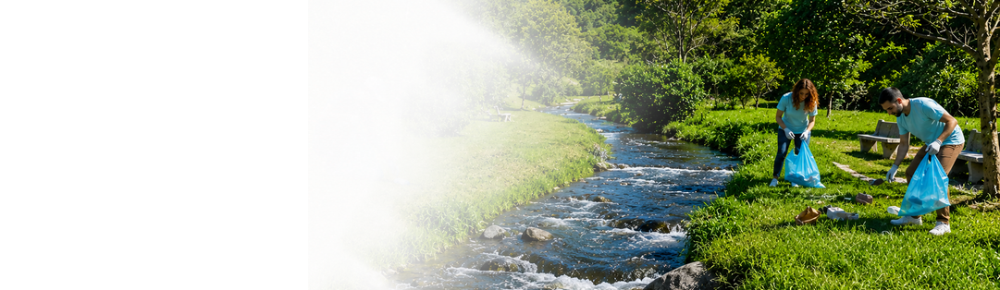

Voluntariado
Tu energía hace la diferencia. Atrévete y forma parte del cambio.
Tu energía hace la diferencia
El voluntariado en ClearDrop te permite ayudar a mejorar el acceso al agua, educar sobre su uso responsable y apoyar a las comunidades más necesitadas. Cada acción cuenta y juntos podemos generar un cambio positivo.
Quiero ser voluntarioCompleta el formulario y únete a nuestra comunidad.
¿Qué es el voluntariado en ClearDrop?
Ser voluntario significa formar parte de un movimiento que busca mejorar la calidad de vida a través de la educación y el cuidado del agua.
- Acción con propósito
- Impacto en la comunidad
- Aprendizaje y participación
- Apoyo al cuidado del agua
Formas de participar
¿Cómo puedes colaborar?
Hay muchas formas de aportar tu tiempo y talento.
Educación ambiental
Ayuda a crear conciencia sobre el cuidado del agua y el medio ambiente en tu comunidad.
Eventos y campañas
Apoya en la organización de actividades y campañas comunitarias que generan impacto.
Monitoreo y reportes
Colabora reportando situaciones relacionadas con el estado del agua en tu zona.
Apoyo comunitario
Participa en iniciativas que ayuden a mejorar la calidad de vida de las comunidades.
Nuestro alcance
Tu impacto cuenta
Cada acción, por pequeña que sea, genera un gran cambio.
Calendario de actividades
Próximos eventos
Participa en nuestras actividades y sé parte del cambio.
Nuestro historial